소방설비기사(기계분야) (2019-03-03 기출문제)
1과목: 소방원론
1. 공기와 접촉되었을 때 위험도(H)가 가장 큰 것은?
- 에테르
- 수소
- 에틸렌
- 부탄
(정답률: 54%)

2. 연면적이 1000m2 이상인 목조건축물은 그 외벽 및 처마 밑의 연소할 우려가 있는 부분을 방화구조로 하여야 하는데 이때 연소우려가 있는 부분은? (단, 동일한 대지 안에 2동 이상의 건물이 있는 경우이며, 공원·광장·하천의 공지나 수면 또는 내화구조의 벽 기타 이와 유사한 것에 접하는 부분을 제외한다.)
- 상호의 외벽 간 중심선으로부터 1층은 3m 이내의 부분
- 상호의 외벽 간 중심선으로부터 2층은 7m 이내의 부분
- 상호의 외벽 간 중심선으로부터 3층은 11m 이내의 부분
- 상호의 외벽 간 중심선으로부터 4층은 13m 이내의 부분
(정답률: 60%)
3. 주요구조부가 내화구조로된 건축물에서 거실 각 부분으로부터 하나의 직통계단에 이르는 보행거리는 피난자의 안전상 몇 m 이하이어야 하는가?
- 50
- 60
- 70
- 80
(정답률: 62%)
4. 제2류 위험물에 해당하지 않는 것은?
- 유황
- 황화린
- 적린
- 황린
(정답률: 72%)
5. 화재에 관련된 국제적인 규정을 제정하는 단체는?
- IMO(International Matritime Organization)
- SEPE(Society of Fire Protection Engineers)
- NFPA(Nation Fire Protection Association)
- ISO(International Organization for Standardization) TC 92
(정답률: 66%)
6. 이산화탄소 소화약제의 임계온도로 옳은 것은?
- 24.4 ℃
- 31.1 ℃
- 56.4 ℃
- 78.2 ℃
(정답률: 66%)
7. 위험물안전관리법령상 위험물의 지정수량이 틀린 것은?
- 과산화나트륨 – 50kg
- 적린 - 100kg
- 트리니트로톨루엔 - 200kg
- 탄화알루미늄 – 400kg
(정답률: 58%)
8. 물질의 취급 또는 위험성에 대한 설명 중 틀린 것은?
- 융해열은 점화원이다.
- 질산은 물과 반응시 발열 반응하므로 주의를 해야한다.
- 네온, 이산화탄소, 질소는 불연성 물질로 취급한다.
- 암모니아를 충전하는 공업용 용기의 색상은 백색이다.
(정답률: 62%)
9. 인화점이 40℃ 이하인 위험물을 저장, 취급하는 장소에 설치하는 전기설비는 방폭구조로 설치하는데, 용기의 내부에 기체를 압입하여 압력을 유지하도록 함으로써 폭발성가스가 침입하는 것을 방지하는 구조는?
- 압력 방폭구조
- 유입 방폭구조
- 안전증 방폭구조
- 본질안전 방폭구조
(정답률: 65%)
10. 화재의 분류방법 중 유류화재를 나타낸 것은?
- A급 화재
- B급 화재
- C급 화재
- D급 화재
(정답률: 79%)
11. 마그네슘의 화재에 주수하였을 때 물과 마그네슘의 반응으로 인하여 생성되는 가스는?
- 산소
- 수소
- 일산화탄소
- 이산화탄소
(정답률: 74%)
12. 물의 기화열이 539.6 cal/g 인 것은 어떤 의미인가?
- 0℃의 물 1g이 얼음으로 변화하는데 539.6 cal 의 열량이 필요하다.
- 0℃의 물 1g이 물로 변화하는데 539.6 cal 의 열량이 필요하다.
- 0℃의 물 1g이 100℃의 물로 변화하는데 539.6 cal 의 열량이 필요하다.
- 100℃의 물 1g이 수증기로 변화하는데 539.6 cal 의 열량이 필요하다.
(정답률: 74%)
13. 방화구획의 설치기준 중 스프링클러 기타 이와 유사한 자동식소화설비를 설치한 10층 이하의 층은 몇 m2 이내마다 구획하여야 하는가?
- 1000
- 1500
- 2000
- 3000
(정답률: 46%)
14. 불활성 가스에 해당하는 것은?
- 수증기
- 일산화탄소
- 아르곤
- 아세틸렌
(정답률: 73%)
15. 이산화탄소의 질식 및 냉각 효과에 대한 설명 중 틀린 것은?
- 이산화탄소의 증기비중이 산소보다 크기 때문에 가연물과 산소의 접촉을 방해한다.
- 액체 이산화탄소가 기화되는 과정에서 열을 흡수한다.
- 이산화탄소는 불연성 가스로서 가연물의 연소반응을 방해한다.
- 이산화탄소는 산소와 반응하며 이 과정에서 발생한 연소열을 흡수하므로 냉각효과를 나타낸다.
(정답률: 62%)
16. 분말 소화약제 분말입도의 소화성능에 관한 설명으로 옳은 것은?
- 미세할수록 소화성능이 우수하다.
- 입도가 클수록 소화성능이 우수하다.
- 입도와 소화성능과는 관련이 없다.
- 입도가 너무 미세하거나 너무 커도 소화성능은 저하된다.
(정답률: 73%)
17. 화재하중에 대한 설명 중 틀린 것은?
- 화재하중이 크면 단위면적당의 발열량이 크다.
- 화재하중이 크다는 것은 화재구획의 공간이 넓다는 것이다.
- 화재하중이 같더라도 물질의 상태에 따라 가혹도는 달라진다.
- 화재하중은 화재구획실내의 가연물 총량을 목재 중량당비로 환산하여 면적으로 나눈 수치이다.
(정답률: 65%)
18. 분말 소화약제 중 A급, B급, C급 화재에 모두 사용할 수 있는 것은?
- Na2CO3
- NH4H2PO4
- KHCO3
- NaHCO3
(정답률: 78%)
19. 증기비중의 정의로 옳은 것은? (단, 분자, 분모의 단위는 모두 g/mol 이다.)
- 분자량 / 22.4
- 분자량 / 29
- 분자량 / 44.8
- 분자량 / 100
(정답률: 71%)
20. 탄화칼슘의 화재 시 물을 주수하였을 때 발생하는 가스로 옳은 것은?
- C2H2
- H2
- O2
- C2H6
(정답률: 64%)
2과목: 소방유체역학
21. 다음 중 열역학 제1법칙에 관한 설명으로 옳은 것은?
- 열은 그 자신만으로 저온에서 고온으로 이동할 수 없다.
- 일은 열로 변환시킬 수 있고 열은 일로 변환시킬 수 있다.
- 사이클 과정에서 열이 모두 일로 변화할 수 없다.
- 열평형 상태에 있는 물체의 온도는 같다.
(정답률: 57%)
22. 안지름 25mm, 길이 10m의 수평 파이프를 통해 비중 0.8, 점성계수는 5×10-3kg/m·s 인 기름을 유량 0.2×10-3 m3/s 로 수송하고자 할 때, 필요한 펌프의 최소 동력은 약 몇 W 인가?
- 0.21
- 0.58
- 0.77
- 0.81
(정답률: 37%)
23. 수은의 비중이 13.6 일 때 수은의 비체적은 몇 m3/kg 인가?
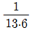
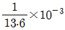
- 13.6
- 13.6 × 10-3
(정답률: 58%)
24. 그림과 같은 U자관 차압 액주계에서 A와 B에 있는 유체는 물이고 그 중간에 유체는 수은(비중 13.6)이다. 또한, 그림에서 h1=20cm, h2=30cm, h3=15cm 일 때 A의 압력(PA)와 B의 압력(PB)의 차이(PA - PB)는 약 몇 kPa 인가?
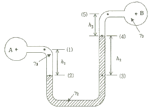
- 35.4
- 39.5
- 44.7
- 49.8
(정답률: 52%)
25. 평균유속 2m/s 로 50L/s 유량의 물을 흐르게 하는데 필요한 관의 안지름은 약 몇 mm 인가?
- 158
- 168
- 178
- 188
(정답률: 58%)
26. 30℃에서 부피가 10L인 이상기체를 일정한 압력으로 0℃로 냉각시키면 부피는 약 몇 L로 변하는가?
- 3
- 9
- 12
- 18
(정답률: 60%)
27. 이상적인 카르노사이클의 과정인 단열압축과 등온압축의 엔트로피 변화에 관한 설명으로 옳은 것은?
- 등온압축의 경우 엔트로피 변화는 없고, 단열압축의 경우 엔트로피 변화는 감소한다.
- 등온압축의 경우 엔트로피 변화는 없고, 단열압축의 경우 엔트로피 변화는 증가한다.
- 단열압축의 경우 엔트로피 변화는 없고, 등온압축의 경우 엔트로피 변화는 감소한다.
- 단열압축의 경우 엔트로피 변화는 없고, 등온압축의 경우 엔트로피 변화는 증가한다.
(정답률: 43%)
28. 그림에서 물 탱크차가 받는 추력은 약 몇 N 인가? (단, 노즐의 단면적은 0.03m2 이며, 탱크 내의 계기압력은 40 kPa 이다. 또한 노즐에서 마찰 손실은 무시한다.)
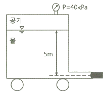
- 812
- 1489
- 2709
- 5343
(정답률: 44%)
29. 비중이 0.877인 기름이 단면적이 변하는 원관을 흐르고 있으며 체적유량은 0.146 m3/s 이다. A점에서는 안지름이 150mm, 압력이 91 kPa 이고, B점에서는 안지름이 450mm, 압력이 60.3 kPa 이다. 또한 B점은 A점보다 3.66m 높은 곳에 위치한다. 기름이 A점에서 B점까지 흐르는 동안의 손실수두는 약 몇 m 인가? (단, 물의 비중량은 9810 N/m3 이다.)
- 3.3
- 7.2
- 10.7
- 14.1
(정답률: 35%)
30. 그림과 같이 피스톤의 지름이 각각 25cm와 5cm이다. 작은 피스톤을 화살표 방향으로 20cm 만큼 움직일 경우 큰 피스톤이 움직이는 거리는 약 몇 mm 인가? (단, 누설은 없고, 비압축성이라고 가정한다.)
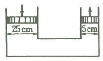
- 2
- 4
- 8
- 10
(정답률: 46%)
31. 스프링클러 헤드의 방수압이 4배가 되면 방수량은 몇 배가 되는가?
- √2배
- 2배
- 4배
- 8배
(정답률: 54%)
32. 다음 중 표준대기압인 1기압에 가장 가까운 것은?
- 860 mmHg
- 10.33 mAq
- 101.325 bar
- 1.0332 kgf/m2
(정답률: 62%)
33. 안지름 10cm의 관로에서 마찰 손실 수두가 속도 수두와 같다면 그 관로의 길이는 약 몇 m 인가? (단, 관마찰계수는 0.03 이다.)(오류 신고가 접수된 문제입니다. 반드시 정답과 해설을 확인하시기 바랍니다.)
- 1.58
- 2.54
- 3.33
- 4.52
(정답률: 52%)
34. 원심식 송풍기에서 회전수를 변화시킬 때 동력변화를 구하는 식으로 옳은 것은? (단, 변화 전후의 회전수는 각각 N1, N2, 동력은 L1, L2 이다.)
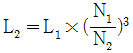
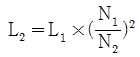
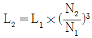
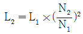
(정답률: 57%)
35. 그림과 같은 1/4원형의 수문(水門) AB가 받는 수평성분 힘(FH)과 수직성분 힘(FV)은 각각 약 몇 kN 인가? (단, 수문의 반지름은 2m 이고, 폭은 3m 이다.)
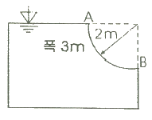
- FH = 24.4, FV = 46.2
- FH = 24.4, FV = 92.4
- FH = 58.8, FV = 46.2
- FH = 58.8, FV = 92.4
(정답률: 45%)
36. 펌프 중심으로부터 2m 아래에 있는 물을 펌프 중심으로부터 15m 위에 있는 송출수면으로 양수하려 한다. 관로의 전 손실수두가 6m 이고, 송출수량이 1m3/min 라면 필요한 펌프의 동력은 약 몇 W 인가?
- 2777
- 3103
- 3430
- 3757
(정답률: 52%)
37. 일반적인 배관 시스템에서 발생되는 손실을 주손실과 부차적 손실로 구분할 때 다음 중 주손실에 속하는 것은?
- 직관에서 발생하는 마찰 손실
- 파이프 입구와 출구에서의 손실
- 단면의 확대 및 축소에 의한 손실
- 배관부품(엘보, 리턴밴드, 티, 리듀서, 유니언, 밸브 등)에서 발생하는 손실
(정답률: 66%)
38. 온도차이 20℃, 열전도율 5W/(m·K), 두께 20cm 인 벽을 통한 열유속(heat flux)과 온도차이 40℃, 열전도율 10W/(m·K), 두께 t인 같은 면적을 가진 벽을 통한 열유속이 같다면 두께 t는 약 몇 cm 인가?
- 10
- 20
- 40
- 80
(정답률: 46%)
39. 낙구식 점도계는 어떤 법칙을 이론적 근거로 하는가?
- Stokes의 법칙
- 열역학 제1법칙
- Hagen-Poiseuille의 법칙
- Boyle의 법칙
(정답률: 68%)
40. 지면으로부터 4m의 높이에 설치된 수평관 내로 물이 4m/s로 흐르고 있다. 물의 압력이 78.4 kPa인 관 내의 한 점에서 전수두는 지면을 기준으로 약 몇 m 인가?
- 4.76
- 6.24
- 8.82
- 12.81
(정답률: 40%)
3과목: 소방관계법규
41. 소방기본법령상 소방본부장 또는 소방서장은 소방상 필요한 훈련 및 교육을 실시하고자 하는 때에는 화재경계지구 안의 관계인에게 훈련 또는 교육 며칠 전까지 그 사실을 통보하여야 하는가?
- 5
- 7
- 10
- 14
(정답률: 55%)
42. 특정소방대상물의 관계인이 소방안전관리자를 해임한 경우 재선임 신고를 해야 하는 기준은? (단, 해임한 날부터를 기준일로 한다.)(문제 오류로 실제 시험에서는 모두 정답처리 되었습니다. 여기서는 1번을 누르면 정답 처리 됩니다.)
- 10일 이내
- 20일 이내
- 30일 이내
- 40일 이내
(정답률: 52%)
43. 소방용수시설 중 소화전과 급수탑의 설치기준으로 틀린 것은?
- 급수탑 급수배관의 구경은 100mm 이상으로 할 것
- 소화전은 상수도와 연결하여 지하식 또는 지상식의 구조로 할 것
- 소방용호스와 연결하는 소화전의 연결금속구의 구경은 65mm로 할 것
- 급수탑의 개폐밸브는 지상에서 1.5m 이상 1.8m 이하의 위치에 설치할 것
(정답률: 68%)
44. 경유의 저장량이 2000리터, 중유의 저장량이 4000리터, 등유의 저장량이 2000리터인 저장소에 있어서 지정수량의 배수는?
- 동일
- 6배
- 3배
- 2배
(정답률: 53%)
45. 소방기본법상 명령권자가 소방본부장, 소방서장 또는 소방대장에게 있는 사항은?
- 소방 활동을 할 때에 긴급한 경우에는 이웃한 소방본부장 또는 소방서장에게 소방업무의 응원을 요청할 수 있다.
- 화재, 재난·재해, 그 밖의 위급한 상황이 발생한 현장에서 소방활동을 위하여 필요할 때에는 그 관할구역에 사는 사람 또는 그 현장에 있는 사람으로 하여금 사람을 구출하는 일 또는 불을 끄거나 불이 번지지 아니하도록 하는 일을 하게 할 수 있다.
- 수사기관이 방화 또는 실화의 혐의가 있어서 이미 피의자를 체포하였거나 증거물을 압수하였을 때에 화재조사를 위하여 필요한 경우에는 수사에 지장을 주지 아니하는 범위에서 그 피의자 또는 압수된 증거물에 대한 조사를 할 수 있다.
- 화재, 재난·재해, 그밖의 위급한 상황이 발생하였을 때에는 소방대를 현장에 신속하게 출동시켜 화재진압과 인명구조·구급 등 소방에 필요한 활동을 하게 하여야 한다.
(정답률: 56%)
46. 화재가 발생하는 경우 인명 또는 재산의 피해가 클 것으로 예상되는 때 소방대상물의 개수·이전·제거, 사용금지 등의 필요한 조치를 명할 수 있는 자는?
- 시·도지사
- 의용소방대장
- 기초자치단체장
- 소방본부장 또는 소방서장
(정답률: 67%)
47. 소방기본법상 보일러, 난로, 건조설비, 가스·전기시설, 그 밖에 화재 발생 우려가 있는 설비 또는 기구 등의 위치·구조 및 관리와 화재 예방을 위하여 불을 사용할 때 지켜야 하는 사항은 무엇으로 정하는가?
- 총리령
- 대통령령
- 시·도 조례
- 행정안전부령
(정답률: 62%)
48. 아파트로 층수가 20층인 특정소방대상물에서 스프링클러 설비를 하여야 하는 층수는? (단, 아파트는 신축을 실시하는 경우이다.)
- 전층
- 15층 이상
- 11층 이상
- 6층 이상
(정답률: 71%)
49. 소방기본법령상 소방본부 종합상황실 실장이 소방청의 종합상황실에 서면·모사전송 또는 컴퓨터통신 등으로 보고하여야 하는 화재의 기준에 해당하지 않는 것은?
- 항구에 매어둔 총 톤수가 1000톤 이상인 선박에서 발생한 화재
- 연면적 15000m2 이상인 공장 또는 화재경계지구에서 발생한 화재
- 지정수량의 1000배 이상의 위험물의 제조소·저장소·취급소에서 발생한 화재
- 층수가 5층 이상이거나 병상이 30개 이상인 종합병원·정신병원·한방병원·요양소에서 발생한 화재
(정답률: 58%)
50. 화재예방, 소방시설 설치·유지 및 안전관리에 관한 법상 소방시설 등에 대한 자체점검을 하지 아니하거나 관리업자 등으로 하여금 정기적으로 점검하게 하지 아니한 자에 대한 벌칙 기준으로 옳은 것은?
- 1년 이하의 징역 또는 1000만원 이하의 벌금
- 3년 이하의 징역 또는 1500만원 이하의 벌금
- 3년 이하의 징역 또는 3000만원 이하의 벌금
- 6개월 이하의 징역 또는 1000만원 이하의 벌금
(정답률: 62%)
51. 소방기본법령상 특수가연물의 저장 및 취급기준 중 석탄·목탄류를 발전용으로 저장하는 경우 쌓는 부분의 바닥면적은 몇 m2 이하인가? (단, 살수설비를 설치하거나, 방사능력 범위에 해당 특수가연물이 포함되도록 대형수동식소화기를 설치하는 경우이다.)(문제 오류로 실제 시험에서는 모두 정답처리 되었습니다. 여기서는 1번을 누르면 정답 처리 됩니다.)
- 200
- 250
- 300
- 350
(정답률: 59%)
52. 제3류 위험물 중 금수성 물품에 적응성이 있는 소화약제는?
- 물
- 강화액
- 팽창질석
- 인산염류분말
(정답률: 73%)
53. 화재예방, 소방시설 설치·유지 및 안전관리에 관한 법령상 소방특별조사위원회의 위원에 해당하지 아니하는 사람은?
- 소방기술사
- 소방시설관리사
- 소방 관련 분야의 석사학위 이상을 취득한 사람
- 소방 관련 법인 또는 단체에서 소방 관련 업무에 3년 이상 종사한 사람
(정답률: 68%)
54. 소방특별조사 결과에 따른 조치명령으로 손실을 입어 손실을 보상하는 경우 그 손실을 입은 자는 누구와 손실보상을 협의하여야 하는가?
- 소방서장
- 시·도지사
- 소방본부장
- 행정안전부장관
(정답률: 73%)
55. 위험물운송자 자격을 취득하지 아니한 자가 위험물 이동탱크저장소 운전 시의 벌칙으로 옳은 것은?
- 100만원 이하의 벌금
- 300만원 이하의 벌금
- 500만원 이하의 벌금
- 1000만원 이하의 벌금
(정답률: 43%)
56. 1급 소방안전관리대상물이 아닌 것은?
- 15층인 특정소방대상물(아파트는 제외)
- 가연성가스를 2000톤 저장·취급하는 시설
- 21층인 아파트로서 300세대인 것
- 연면적 20000m2 인 문화집회 및 운동시설
(정답률: 56%)
57. 문화재보호법의 규정에 의한 유형문화재와 지정문화재에 있어서는 제조소 등과의 수평거리를 몇 m 이상 유지하여야 하는가?
- 20
- 30
- 50
- 70
(정답률: 67%)
58. 다음 중 중급기술자의 학력·경력자에 대한 기준으로 옳은 것은? (단, “학력·경력자”란 고등학교·대학 또는 이와 같은 수준 이상의 교육기관의 소방 관련학과의 정해진 교육과정을 이수하고 졸업하거나 그 밖의 관계법령에 따라 국내 또는 외국에서 이와 같은 수준 이상의 학력이 있다고 인정되는 사람을 말한다.)
- 고등학교를 졸업 후 10년 이상 소방 관련 업무를 수행한 자
- 학사학위를 취득한 후 6년 이상 소방 관련 업무를 수행한 자
- 석사학위를 취득한 후 2년 이상 소방 관련 업무를 수행한 자
- 박사학위를 취득한 후 1년 이상 소방 관련 업무를 수행한 자
(정답률: 63%)
59. 소방시설공사업법령상 상주 공사감리 대상 기준 중 다음 ㉠, ㉡, ㉢에 알맞은 것은?
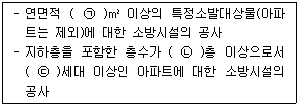
- ㉠ 10000, ㉡ 11, ㉢ 600
- ㉠ 10000, ㉡ 16, ㉢ 500
- ㉠ 30000, ㉡ 11, ㉢ 600
- ㉠ 30000, ㉡ 16, ㉢ 500
(정답률: 60%)
60. 화재예방, 소방시설 설치·유지 및 안전관리에 관한 법상 소방안전관리대상물의 소방안전관리자 업무가 아닌 것은?(문제 오류로 실제 시험에서는 모두 정답처리 되었습니다. 여기서는 1번을 누르면 정답 처리 됩니다.)
- 소방훈련 및 교육
- 피난시설, 방화구획 및 방화시설의 유지·관리
- 자위소방대 및 초기대응체계의 구성·운영·교육
- 피난계획에 관한 사항과 대통령령으로 정하는 사항이 포함된 소방계획서의 작성 및 시행
(정답률: 67%)
4과목: 소방기계시설의 구조 및 원리
61. 대형 이산화탄소 소화기의 소화약제 충전량은 얼마인가?
- 20 kg 이상
- 30 kg 이상
- 50 kg 이상
- 70 kg 이상
(정답률: 58%)
62. 개방형스프링클러설비에서 하나의 방수구역을 담당하는 헤드의 개수는 몇 개 이하로 해야 하는가? (단, 방수구역은 나누어져 있지 않고 하나의 구역으로 되어 있다.)
- 50
- 40
- 30
- 20
(정답률: 68%)
63. 분말소화설비의 가압용 가스용기에 대한 설명으로 틀린 것은?
- 가압용가스 용기를 3병 이상 설치한 경우에는 2개 이상의 용기에 전자개방밸브를 부착할 것
- 가압용가스 용기에는 2.5 MPa 이하의 압력에서 조정이 가능한 압력조정기를 설치할 것
- 가압용가스에 질소가스를 사용하는 것의 질소가스는 소화약제 1kg 마다 20 L(35℃에서 1기압의 압력상태로 환산한 것) 이상으로 할 것
- 축압용가스에 질소가스를 사용하는 것의 질소가스는 소화약제 1kg 마다 10 L(35℃에서 1기압의 압력상태로 환산한 것) 이상으로 할 것
(정답률: 54%)
64. 소화용수 설비의 소화수조가 옥상 또는 옥탑의 부분에 설치된 경우 지상에 설치된 채수구에서의 압력은 얼마 이상이어야 하는가?
- 0.15 MPa
- 0.20 MPa
- 0.25 MPa
- 0.35 MPa
(정답률: 68%)
65. 스프링클러소화설비의 배관 내 압력이 얼마 이상일 때 압력배관용 탄소강관을 사용해야 하는가?
- 0.1 MPa
- 0.5 MPa
- 0.8 MPa
- 1.2 MPa
(정답률: 64%)
66. 할론소화설비에서 국소방출방식의 경우 할론소화약제의 양을 산출하는 식은 다음과 같다. 여기서 A는 무엇을 의미하는가? (단, 가연물이 비산할 우려가 있는 경우로 가정한다.)
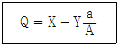
- 방호공간의 벽면적의 합계
- 창문이나 문의 틈새면적의 합계
- 개구부 면적의 합계
- 방호대상물 주위에 설치된 벽의 면적의 합계
(정답률: 58%)
67. 이산화탄소 소화약제의 저장용기 설치기준 중 옳은 것은?
- 저장용기의 충전비는 고압식은 1.9 이상 2.3 이하, 저압식은 1.5 이상 1.9 이하로 할 것
- 저압식 저장용기에는 액면계 및 압력계와 2.1 MPa 이상 1.7 MPa 이하의 압력에서 작동하는 압력경보장치를 설치할 것
- 저장용기는 고압식은 25 MPa 이상, 저압식은 3.5 MPa 이상의 내압시헙압력에 합격한 것으로 할 것
- 저압식 저장용기에는 내압시험압력의 1.8배의 압력에서 작동하는 안전밸브와 내압시험압력의 0.8배부터 내압시험압력까지의 범위에서 작동하는 봉판을 설치할 것
(정답률: 55%)
68. 포헤드를 정방형으로 설치 시 헤드와 벽과의 최대 이격거리는 약 몇 m 인가?
- 1.48
- 1.62
- 1.76
- 1.91
(정답률: 40%)
69. 소화용수설비와 관련하여 다음 설명 중 괄호 안에 들어갈 항목으로 옳게 짝지어진 것은?
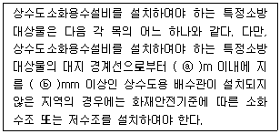
- ⓐ : 150, ⓑ 75
- ⓐ : 150, ⓑ 100
- ⓐ : 180, ⓑ 75
- ⓐ : 180, ⓑ 100
(정답률: 34%)
70. 연소방지설비의 수평주행배관의 설치 기준에 대한 설명 중 괄호 안의 항목이 옳게 짝지어진 것은?(관련 규정 개정전 문제로 여기서는 기존 정답인 2번을 누르면 정답 처리됩니다. 자세한 내용은 해설을 참고하세요.)
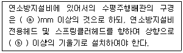
- ⓐ 80, ⓑ 1/1000
- ⓐ 100, ⓑ 1/1000
- ⓐ 80, ⓑ 2/1000
- ⓐ 100, ⓑ 2/1000
(정답률: 63%)
71. 예상제연구역 바닥면적 400m2 미만 거실의 공기유입구와 배출구간의 직선거리 기준으로 옳은 것은? (단, 제연경계에 의한 구획을 제외한다.)
- 2m 이상 확보되어야 한다.
- 3m 이상 확보되어야 한다.
- 5m 이상 확보되어야 한다.
- 10m 이상 확보되어야 한다.
(정답률: 49%)
72. 다음 중 스프링클러설비와 비교하여 물분무 소화설비의 장점으로 옳지 않은 것은?
- 소량의 물을 사용함으로써 물의 사용량 및 방사량을 줄일 수 있다.
- 운동에너지가 크므로 파괴주수 효과가 크다.
- 전기 절연성이 높아서 고압통전기기의 화재에도 안전하게 사용할 수 있다.
- 물의 방수과정에서 화재열에 따른 부피증가량이 커서 질식효과를 높일 수 있다.
(정답률: 59%)
73. 일정 이상의 층수를 가진 오피스텔에서는 모든 층에 주거용 주방자동소화장치를 설치해야 하는데, 몇 층 이상인 경우 이러한 조치를 취해야 하는가?
- 15층 이상
- 20층 이상
- 25층 이상
- 30층 이상
(정답률: 53%)
74. 수직강하식 구조대가 구조적으로 갖추어야 할 조건으로 옳지 않은 것은? (단, 건물내부의 별실에 설치하는 경우는 제외한다.)
- 구조대의 포지는 외부포지와 내부포지로 구성한다.
- 포지는 사용 시 충격을 흡수하도록 수직방향으로 현저하게 늘어나야 한다.
- 구조대는 연속하여 강하할 수 있는 구조이어야 한다.
- 입구틀 및 취부틀의 입구는 지름 50cm 이상의 구체가 통과할 수 있어야 한다.
(정답률: 65%)
75. 주차장에 분말소화약제 120kg을 저장하려고 한다. 이때 필요한 저장용기의 최소 내용적(L)은?
- 96
- 120
- 150
- 180
(정답률: 61%)
76. 다음 중 노유자 시설의 4층 이상 10층 이하에서 적응성이 있는 피난기구가 아닌 것은?
- 피난교
- 다수인피난장비
- 승강식피난기
- 미끄럼대
(정답률: 68%)
77. 물분소화설비를 설치하는 차고의 배수설비 설치기준 중 틀린 것은?
- 차량이 주차하는 장소의 적당한 곳에 높이 10cm 이상의 경계턱으로 배수구를 설치할 것
- 길이 40m 이하마다 집수관, 소화핏트 등 기름분리장치를 설치할 것
- 차량이 주차하는 바닥은 배수구를 향하여 100분의 1 이상의 기울기를 유지할 것
- 배수설비는 가압송수장치의 최대 송수능력의 수량을 유효하게 배수할 수 있는 크기 및 기울기로 할 것
(정답률: 72%)
78. 층수가 10층인 일반창고에 습식 폐쇄형 스프링클러헤드가 설치되어 있다면 이 설비에 필요한 수원의 양은 얼마 이상이어야 하는가? (단, 이 창고는 특수가연물을 저장·취급하지 않는 일반물품을 적용하고, 헤드가 가장 많이 설치된 층은 8층으로서 40개가 설치되어 있다.)
- 16m3
- 32m3
- 48m3
- 64m3
(정답률: 41%)
79. 포소화설비에서 펌프의 토출관에 압입기를 설치하여 포 소화약제 압입용 펌프로 포소화약제를 압입시켜 혼합하는 방식은?
- 라인 프로포셔너방식
- 펌프 프로포셔너방식
- 프레져 프로포셔너방식
- 프레져사이드 프로포셔너방식
(정답률: 73%)
80. 다음 중 옥내소화전의 배관 등에 대한 설치방법으로 옳지 않은 것은?
- 펌프의 토출 측 주배관의 구경은 평균 유속을 5m/s 가 되도록 설치하였다.
- 배관 내 사용압력이 1.1 MPa 인 곳에 배관용탄소강관을 사용하였다.
- 옥내소화전 송수구를 단구형으로 설치하였다.
- 송수구로부터 주배관에 이르는 연결배관에는 개폐밸브를 설치하지 않았다.
(정답률: 46%)